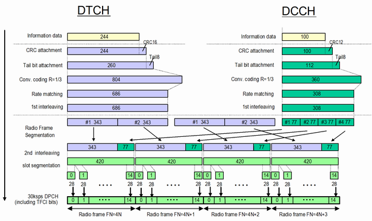

The data content of the 3GPP downlink RMC is defined on transport channel level according to 3GPP TS 25.101. The data sequence to be transferred is directly fed into the dedicated traffic channel (DTCH) and the dedicated control channel (DCCH). The transport channels are channel coded, multiplexed and mapped onto a dedicated physical channel (DPCH) with variable data rate (see figure below).
The downlink reference measurement channel generated in this way is to be used for various transmitter and receiver tests specified, for example, in 3GPP TS 25.101 and 34.121.
The following example illustrates the generation of a 3GPP reference measurement channel from the DTCH and DCCH transport channels. It lists the physical and transport channel parameters for an information bit rate of 12.2 kbit/s. For other bit rates, refer to specification 3GPP TS 25.101.

Physical parameter | Value |
|---|---|
Information bit rate | 12.2 kbit/s |
DPCH | 30 ksymbol/s |
Slot format number | 11 |
TFCI | On |
Power offsets PO1, PO2 and PO3 | 0 dB |
Puncturing | 14.7 % |
Transport channel parameter | DTCH | DCCH |
|---|---|---|
Transport channel number | 1 | 2 |
Transport block size | 244 | 100 |
Transport block set size | 244 | 100 |
Transmission time interval | 20 ms | 40 ms |
Type of error protection | Convolution coding | Convolution coding |
Coding rate | 1/3 | 1/3 |
Rate matching attribute | 256 | 256 |
Size of CRC | 16 | 12 |
Position of TrCH in radio frame | fixed | fixed |
Various tests, especially receiver tests, require that data is looped back by the UE. Several loop modes are defined in 3GPP TS 34.109. Only loop mode 1 and 2 is relevant for bidirectional radio bearers. For reduced signaling, only loop mode 2 is used. With or without loop, RMC connections are always set up in test mode, i.e. without alerting.
Loop mode 1 | Loop mode 2 | |
|---|---|---|
Loopback point | Above layer 2 | Effectively on transport layer (higher layers in transparent mode) |
Data looped back | RLC/PDCP SDUs | Transport block data and CRC bits |
Special settings | RLC modes "transparent" and "acknowledged" are available | UL CRC can be enabled or disabled, see below |
- UL CRC disabled:
UE performs no CRC. Received DL CRC bits are added to the UL transport block.
Symmetric DL/UL data rate and asymmetric DL/UL transport block size. - UL CRC enabled:
UE performs CRC check and sends resulting UL CRC bits to the tester. Received DL CRC bits are discarded.
Symmetric DL/UL data rate and symmetric DL/UL transport block size or
Asymmetric DL/UL data rate and asymmetric DL/UL transport block size.
Loops are required for the "WCDMA Signaling BER Measurement", see especially "BER, BLER and DBLER Tests".